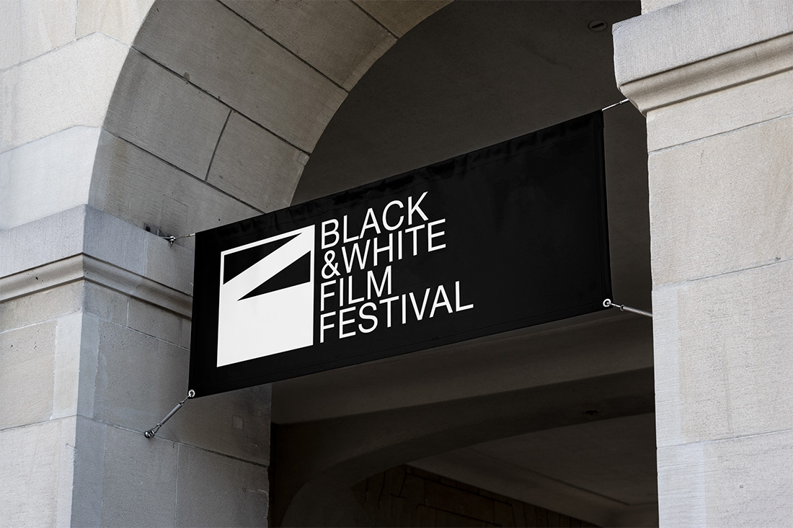
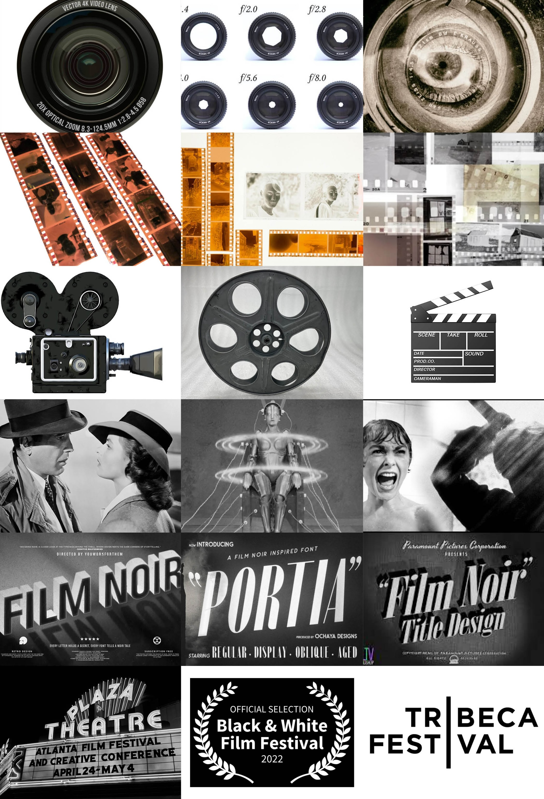
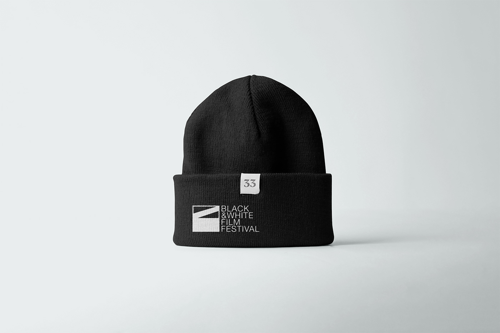
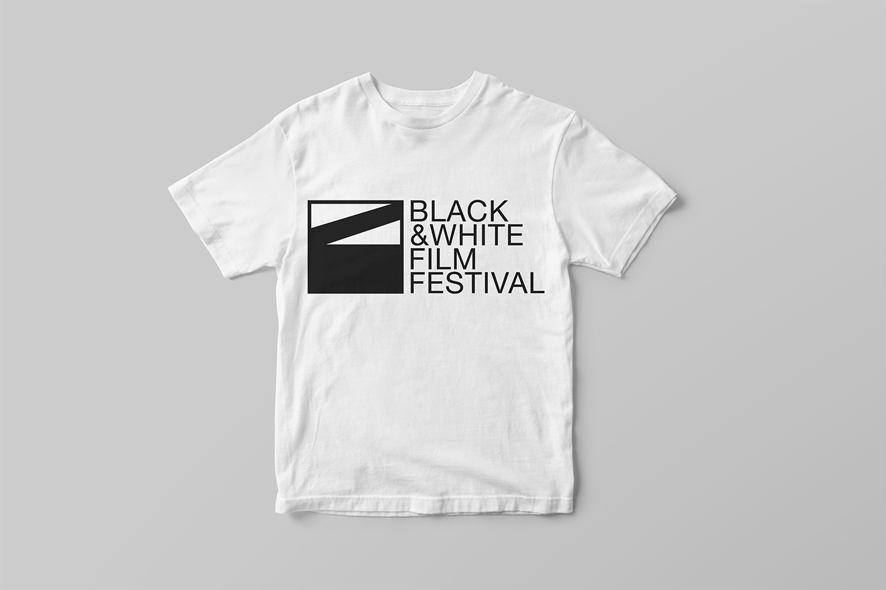
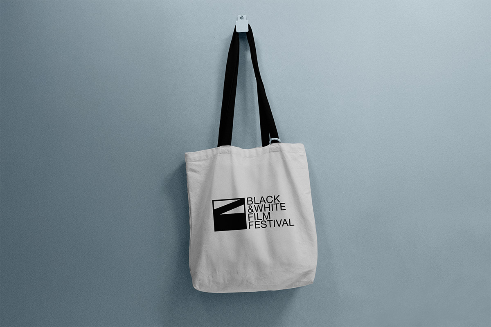
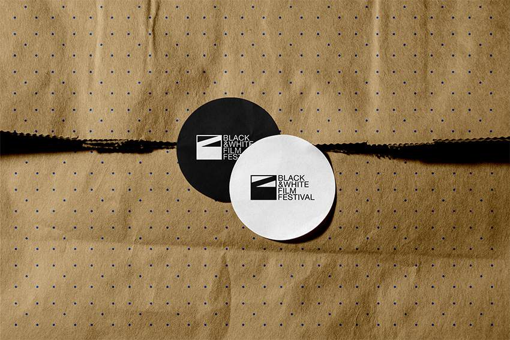
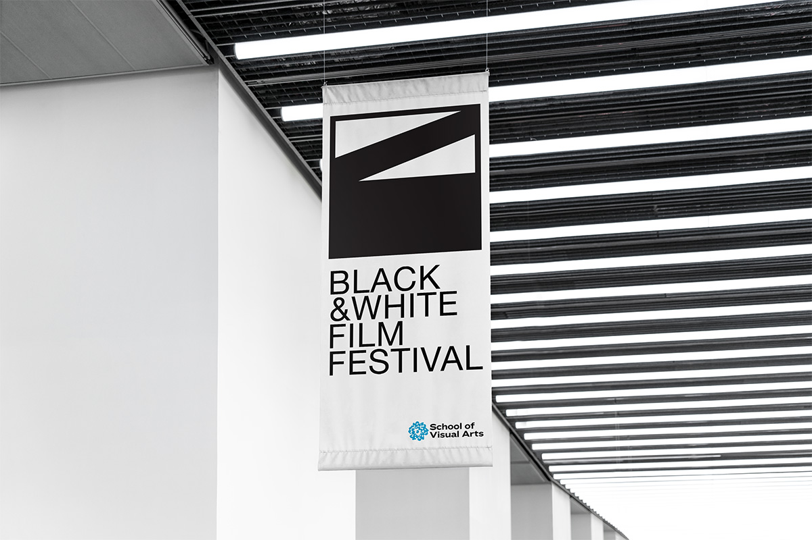

SVA Film Logo
A logo design for the School of Visual Arts Film Festival in New York City. From word associations and moodboards through two rounds of sketch iterations, digital explorations, and a final combination mark system.

Project Overview & Concept
A logo design for the School of Visual Arts Film Festival in New York City. The festival needed an identity distinct from the broader SVA brand, something that captured the independent spirit of filmmaking while staying rooted in the institution's legacy of craft and experimentation.
The process starts with word associations and a moodboard to define the visual territory. Two rounds of sketch iterations explore different directions before moving into digital refinement, resulting in a final logo identifier and combination mark system.
"A single frame holds a world. The logo should too."
Mood Board
The mood board draws on the visual history of cinema: film stock, vintage cameras, clapperboards, classic black-and-white stills, type-driven title sequences, and film festival logos. The goal was to establish the visual language of the project before putting pencil to paper: high-contrast, typographic, and monochromatic.

Word Associations
Word associations started with the name itself. Every word in "Black and White Film Festival" was broken down into synonyms, variations, and related terms. The exercise wasn't about finding the right word. It was about mapping the full tonal and conceptual territory before narrowing in on a direction.
Sketch Iterations I & II
Two rounds of sketching explored abstract mark-making, typographic treatments, and hybrid approaches that combine letterforms with cinematic symbols. The second round narrowed to three directions: the aperture, the unspooled film negative, and the clapperboard. The clapperboard pulled ahead. It was recognizable enough to read, abstract enough to be graphic, and strong enough to anchor a wordmark.
Logo Iterations I & II
Digital iterations refined proportion, weight, and the relationship between letterform and mark. Two directions made it to high fidelity. One would become the final logo.
Combination Mark & Identifier
The final logo was built into a complete combination mark system: primary lockup, stacked variant, icon-only mark, and reversed versions for dark backgrounds. Every variant was tested at small sizes for legibility.
Final Logos
The final wordmark combines a custom-modified condensed sans-serif with a geometric framing device that references film aspect ratios. The clapperboard lives in the mark: a diagonal slash cuts through a square frame, creating tension and movement within something otherwise controlled and geometric. The condensed sans-serif stacked flush left gives it editorial weight.
Mockups
Enamel pins, t-shirts, tote bags, and caps. The identity was applied across merchandise and print contexts to see how the mark holds up in the real world. The geometric simplicity of the mark made it adaptable without losing its character.





Final Outcome & Reflection
The SVA Black & White Film Festival identity started with a name and ended with a mark that earns its references. The clapperboard wasn't chosen for nostalgia. It was chosen because it abstracted well, held its graphic quality at every size, and carried the spirit of filmmaking without illustrating it literally. The restraint of a monochromatic palette gave the mark authority and range.
This project reinforced the idea that the research phase isn't preliminary work. It is the work. The word associations and mood board didn't just inform the sketches; they made the final decision legible. The final mark came from an idea in the second round of sketching that almost didn't make it into digital. Without that early mapping, it might not have. With it, the choice was obvious.